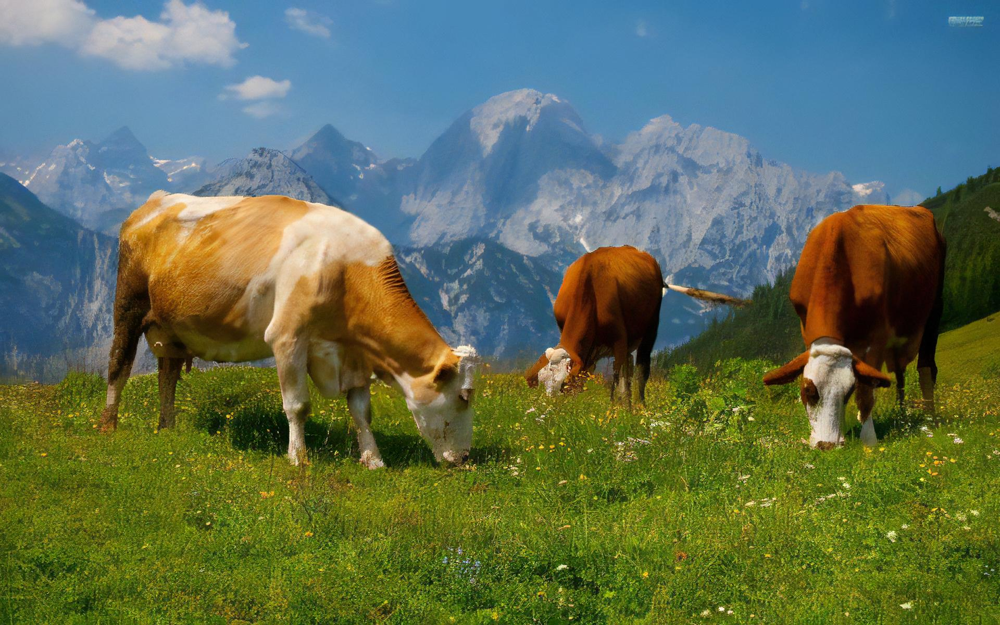
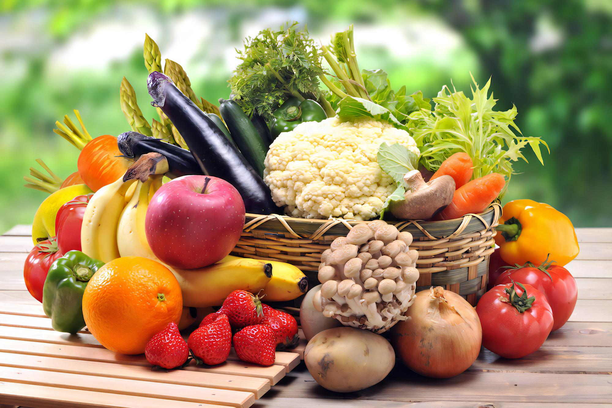
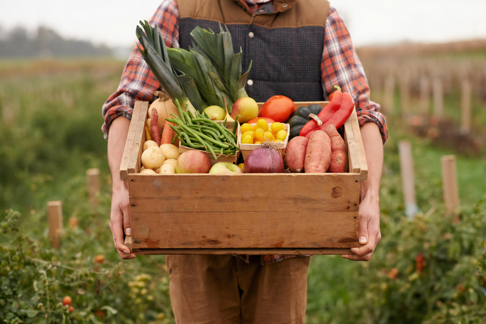
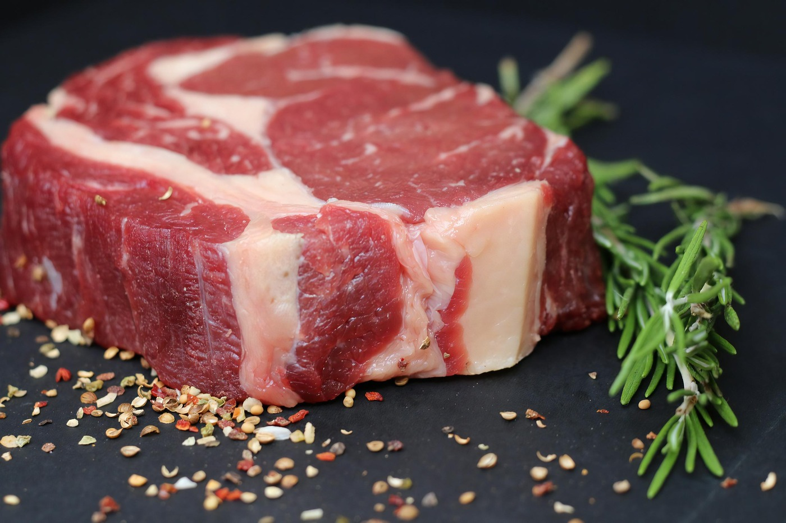

L'alimentazione ecosostenibile rappresenta un approccio cruciale per affrontare le sfide ambientali e nutrizionali attuali. Si tratta di una scelta consapevole che promuove la produzione, la distribuzione e il consumo di cibi con un'impronta ecologica ridotta. Questo stile alimentare privilegia ingredienti locali, stagionali e biologici, riducendo il consumo di carne e l'utilizzo di risorse come l'acqua e il suolo.

Allevamenti naturali
L'allevamento biologico si basa sul rigoroso rispetto del benessere degli animali e dei loro comportamenti naturali, senza forzarli in alcun modo come invece succede negli allevamenti intensivi.

Dieta vegana/vegetariana
La dieta vegana o Vegan è un regime alimentare che esclude totalmente i prodotti di origine animale.

Km 0
Gli alimenti “a Km zero”, definiti anche con il termine più tecnico “a filiera corta”, sono prodotti locali che vengono venduti o somministrati nelle vicinanze del luogo di produzione.

Carne coltivata
La carne sintetica, o carne coltivata in laboratorio, è un tipo di carne prodotta attraverso la coltura di cellule animali senza la necessità di allevare o abbattere animali.